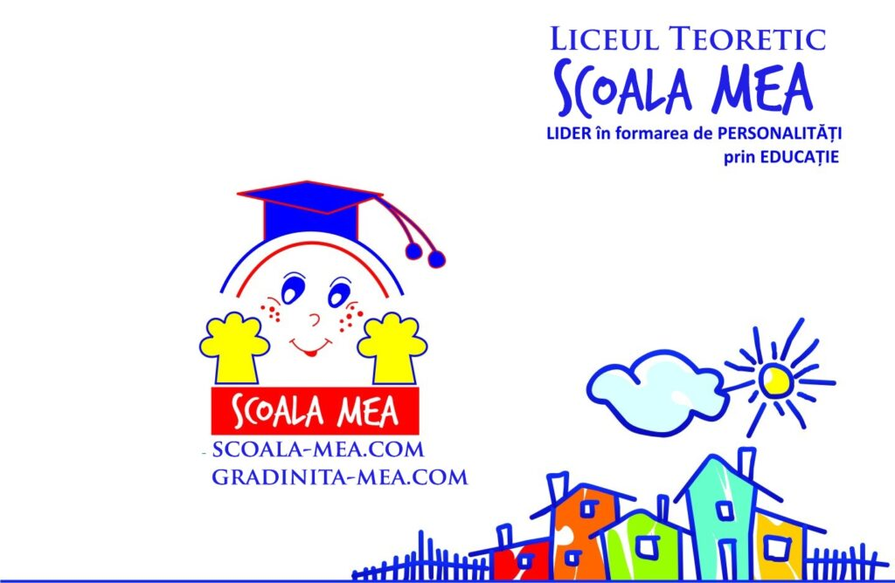

Educație prin cercetășie la „Școala Mea"

Vinerea trecută, am avut plăcerea de a cunoaște elevii de la “Școala Mea” – un liceu teoretic care de 12 ani furnizează în București educație privată de calitate.
Aici ne-am bucurat de o primire călduroasă din partea copiilor din clasele a V-a, iar exuberanța cu care au participat la cele câteva zeci de minute ale prezentării, ne face să credem că între ei se află mulți temerari încă nedescoperiți.
Am avut ocazia de a interacționa și cu liceenii de la “Școala Mea”, care deasemenea au fost receptivi și deschiși față de programele cercetășești.
Pe această cale, mulțumim conducerii liceului pentru interesul arătat față de cercetășei. Avem speranța că putem dezvolta împreună colaborări care se vor dovedi benefice și valoroase pentru viitorul copiilor și tinerilor.
Sperăm ca semințele cercetășiei plantate cu ocazia acestei întâlniri să crească și să prindă rădăcini, iar într-un viitor apropiat să vorbim atât despre educația, cât și despre cercetășia pe care le promovează Cabana Scout și Șocala Mea.
Mai multe informaţii şi imagini despre acest eveniment, puteţi găsi şi pe pagina instituţiei.